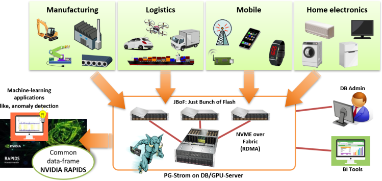
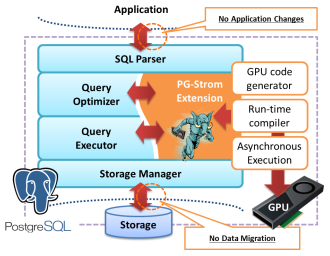
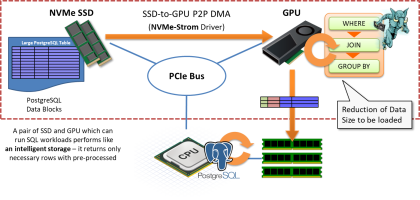
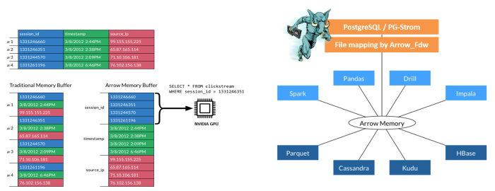
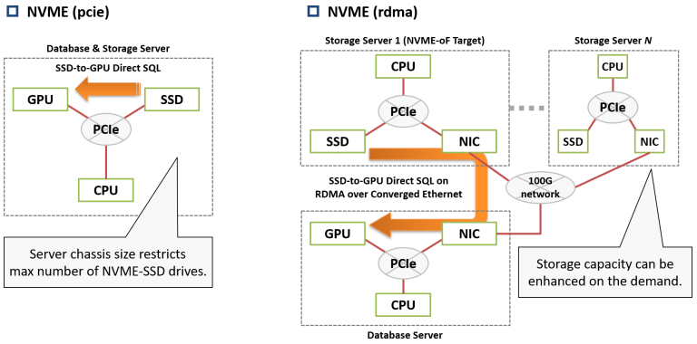
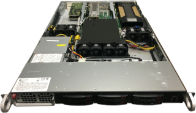

A unified data platform for log-data processing, analytics and machine-learning

PG-Strom is an extension of PostgreSQL that is one of the most widely used DB systems. This software is designed for acceleration of terabytes and billions-rows scale data processing, summarizing and analytics, by utilization of maximum capability of GPU and NVME-SSD.
Features of PG-Strom especially focus on log-data processing of large scale accumulated data like IoT/M2M area. It allows a series of data management cycle on a simple standalone database server configuration; data import, summarizing, transformation, cooperation with machine-learning application like anomaly detection, and so on.
In addition to easy-to-understand effects such as system cost reduction and time reduction of massive data migration, all the operations works on PostgreSQL system that is familiar for many engineers, we can utilize existing skill and knowledge of database administration and also improve software quality of applications.
PG-Strom core technologies
Transparent massive-parallel SQL execution by GPU

GPU Characteristics
A GPU device has thousands processor cores and high performance memory bus arounds hundreds GB/s bandwidth. These hardware resources work very efficiently on parallel computing, thus GPU can offer much higher price-performance ratio than CPU. Matrix operations are a typical parallel computing workload where GPU has advantage, because of identical calculations on massive amount of uniformed data set. SQL also has similar workloads, like evaluation of WHERE-clause for each record on full table scan, for example.
PG-Strom Overview PG-Strom is an extension for PostgreSQL, designed for acceleration of summarizing and analytic SQL workloads using parallel computing capability of GPUs. It supports on-GPU execution of WHERE, JOIN and GROUP BY which are CPU intensive workloads. Once PostgreSQL query optimizer chooses on-GPU execution, PG-Strom generates GPU binary code from the SQL by JIT (just-in-time) compile, then asynchronously runs on GPU in massive parallel.
SSD-to-GPU Direct SQL for maximum storage performance
SSD-to-GPU Direct SQL, a unique technology of HeteroDB, enables to load PostgreSQL data blocks on NVME storage to GPU device directly, then executes SQL workloads prior to data load on CPU/RAM. It reduces the data size to be processed by CPU, and it is not rare that data size becomes 1/1000 or less, if GPU can handle aggregation operations with GROUP BY. Even though GPU is usually considered as a "computing accelerator", it can also accelerate I/O intensive SQL workloads by utilization of GPU for "data reduction on the way of I/O bus".

Technology Basis - GPUDirect RDMA
NVIDIA GPUDirect RDMA is technology basis of this mechanism. It enables peer-to-peer data transfer between GPU device memory and other PCIe devices. GPUDirect RDMA is originally designed for MPI over Infiniband between GPU servers, on the other hands, we can utilize this feature on other type of PCIe devices as long as custom Linux kernel module intermediates data transfer on these devices. We applied this infrastructure for the close cooperation on NVME-SSD and GPU.
Columnar data store of Apache Arrow
PG-Strom supports direct read of Apache Arrow format that is used by many of data analytics applications, so it eliminates the data importing steps to DB system, and pulls out higher effective SQL processing performance more than physical limit of storage, with efficient I/O by columnar data structure.

Apache Arrow is one of the columnar data format, and also a data exchange format used by many data analytics applications. So, libraries to handle Arrow format are provided for major languages like C/C++, Python and so on.
Why data import is not necessary?
PG-Strom allows to read Arrow files as like PostgreSQL tables using foreign-table interface, and also support SQL processing on GPU.
Usually, it takes tons of time to import external data-set to the database system, prior to summarizing and analyzing. On the other hands, Arrow_Fdw of PG-Strom just maps Arrow files on foreign tables, so a simple file copy completes data import.
Why efficient I/O
It is not usual to reference all the columns defined at a table in the analytic workloads. Usually, it is enough to reference a part of columns, on the other words, unreferenced columns are "junk data" that consumes I/O bandwidth with no sense.
It is hard to extract only referenced columns from row-data like PostgreSQL. In case of columnar data, we can easily control the device to read only referenced columns contrastingly, because data elements are closely disposed per column.
Scalable storage by NVME-oF support
It is not an easy task to estimate the required storage capacity exactly on system installation time for the systems that collect and accumulate log-data increasing day-by-day, like IoT/M2M area.
If PCIe-based NVME-SSDs are installed on the server, the maximum storage capacity is restricted by the server chassis size. On the other hands, NVME-over-Fabric technology, that uses remote NVME-SSDs over extreme fast networks, allows to extend capacity of the storage on demand, regardless of the server chassis size.
SSD-to-GPU Direct SQL technology of PG-Strom supports NVME-oF, and allows to load data blocks from remote NVME-SSD to local GPU directly by RDMA (Remote Direct Memory Aceess) over the network cards.

Proposition of use scenarios
Log-data search & processing - for security
In case of security incidents, log-data of IT systems or network facilities provide us a hint to find out the causation and scope of the impact. However, it is not realistic scenario to apply an generic DB tuning methodology like indexing or partitioning preliminary towards unknown attack patterns, on the other hands, cause investigation and reporting are rapidly required.
PG-Strom enables fast log-search and try-&-error of hypothesis by utilization of GPU's computing power and NVME-SSD's wide bandwidth. For engineers in the field, they can use SQL statements and operators of PostgreSQL which are familiar with.
Business Intelligence & Reporting
Typical summarizing SQL workloads, often used for business intelligence (BI) or reporting, are suitable for parallel execution by massive CPU/GPU cores and require storage system high I/O throughput. PG-Strom is optimized to this kind of workloads, thus enables rapid summarizing with all the hardware resources like CPU, GPU and SSD.
Therefore, it allows to replace legacy systems, expensive DWH appliance or cluster based systems people often adopted in the past, by simple PostgreSQL-based solution.
Anomaly Detection
We need to find out “anomaly” as frequent as possible, to detect criminal transaction, like credit-card skimming or bank transfer scam, from the daily transactional records.
PG-Strom supports to run anomaly detection logic based on statistical analysis algorithms directly on the transactional records stores in the database. GPU can process this logic very fast, and no need to export the database for checking because of in-database processing.
Product Specification
Example of hardware configuration

| model | Supermicro SYS-1019GP-TT | Qty |
|---|---|---|
| CPU | Intel Xeon Gold 6126T(12C,2.6GHz) | 1 |
| RAM | 16GB (DDR4-2666; ECC) | 12 |
| GPU | NVIDIA Tesla V100 (5120C, 32GB) | 1 |
| SSD | Intel DC P4600 (2.0TB; HHHL) | 3 |
| HDD | 2.0TB (SATA; 7.2krpm; 2.5") | 6 |
- Check HW-Validation-List for full list of the validated hardware configurations.
- Software requirements
- OS: Red Hat Enterprise Linux 7.x / CentOS 7.x
- CUDA: CUDA Toolkit 10.1 or later
- DB: PostgreSQL v9.6, v10, v11
Software Subscription
PG-Strom Enterprise Subscription (1GPU, 1year)
- This subscription is required for each GPU device used by PG-Strom
- Note that it is not number of GPU devices installed on the target system.
- This subscription includes below:
- License key for the proprietary modules
- Technical support of the target system
- Online updates of the software
- Check HW-Validation-List for supported hardware configuration.
- This subscription has an open price. Please contact us from the contact form at bottom of the page.